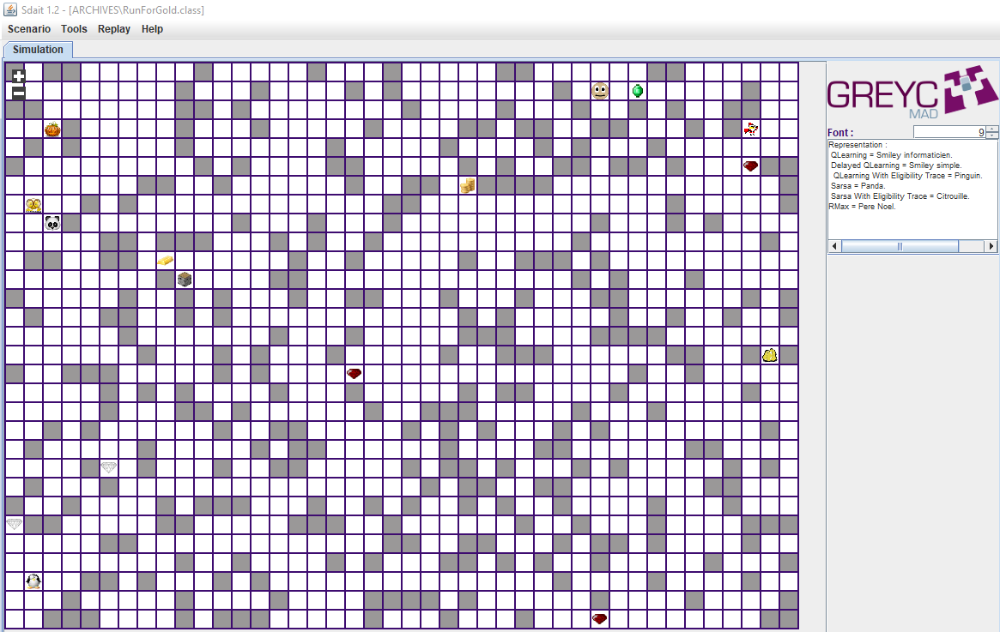

Contexte
Septembre 2013 - 2014
Sous-projet du stage réalisé dans l'équipe Modèles, Agents et Décisions (MAD) au GREYC lors de ma cinquième année à Epitech. Plus de détails sur le stage ici.
Sous-projet du stage réalisé dans l'équipe Modèles, Agents et Décisions (MAD) au GREYC lors de ma cinquième année à Epitech. Plus de détails sur le stage ici.
Le sujet du stage portait sur la réalisation d'une librairie Java d'intelligence artificielle. Parmi les techniques implémentées, nous retrouvons différents algorithmes d'apprentissage par renforcement. Ces algorithmes faisant office de cours au sein de l'Université de Caen Normandie, il nous a semblé approprié de créer un petit jeu nous permettant à la fois de faire nos tests et de servir d'outil de démonstration lors des différents évènements (salon de l'étudiant, fête de la science) pour montrer et expliquer à la fois les réalisations de l'équipe MAD et les cours proposés à l'Université.
Cet outil n'ayant pas été initialement prévu dans le cadre du stage, sa forme était libre. Après discussion avec mon encadrant, nous sommes tombés d'accord qu'un mini-jeu serait plus parlant lors des salons et avons donc opté pour un jeu de labyrinthe.
Le mini-jeu ainsi créé est une simple simulation de labyrinthe intégrant un nombre configurable d'agent, chacun dirigé par un algorithme d'apprentissage par renforcement. Bien que la plupart des cases soient vides ou pleines (faisant office de mur), certaines cases donnent ou enlèvent des points aux agents leur marchant dessus.
Les agents n'ont pour connaissance que la dynamique du système (les mouvements qu'ils peuvent faire) et le retour lié à leur mouvement (une collision, un gain ou une perte de point ou juste l'actualisation de leurs coordonnées). Leur objectif est donc de parcourir le labyrinthe, d'identifier les cases rentables et d'y rentrer en boucle pour accumuler le plus de points possibles.
Tout comme la librairie d'intelligence artificielle, cette simulation est codée en Java. Pour ce qui est de l'interface, une librairie interne à l'équipe, développée par un précédent stagiaire, est utilisée. Cette librairie est une surcouche de swing modifié au fur et à mesure des projets.
L'implémentation fut assez basique. Le labyrinthe est représenté par une grille, généré aléatoirement.
Les agents sont configurables via un fichier de configuration (choix du nombre d'agents, position de départ et algorithme d'apprentissage par renforcement utilisé).
La vitesse des agents, leur lancement et les pauses sont gérés manuellement via l'interface de la librairie graphique.
Les actions des agents ainsi que leurs scores sont stockés dans des fichiers résultats permettant une analyse postérieure du bon fonctionnement des algorithmes testés.

Les cases représentant des I.A. sont représentées par des animaux et des petits smileys. La correspondance image/algorithme des agents est précisée sur la droite de l'écran.
Les cases rapportant des points sont représentées par des ressources indiquant le nombre de points fourni par la case (par ordre croissant : bois, fer, pépite d'or, pièce d'or, lingot d'or, rubis, émeraude et finalement diamant).